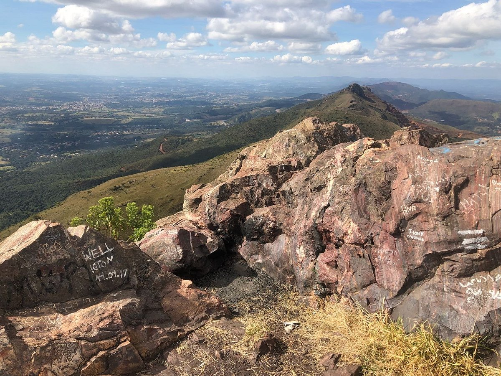

Trilhas em Minas Gerais – Aventuras e Belezas Naturais em Cada Caminho
Minas Gerais é um verdadeiro paraíso para os amantes do ecoturismo, oferecendo trilhas para todos os níveis de dificuldade, que atravessam paisagens deslumbrantes e levam os aventureiros a cenários de tirar o fôlego. Das montanhas da Serra do Cipó aos cânions de Capitólio, passando por parques nacionais e áreas de preservação, as trilhas de Minas oferecem uma experiência única de contato com a natureza.
A Serra do Cipó, localizada a cerca de 100 km de Belo Horizonte, é um dos destinos mais procurados para o trekking. Suas trilhas, como a da Cachoeira Grande e a do Rio Cipó, conduzem os visitantes por campos rupestres, vales e cachoeiras de águas cristalinas, proporcionando uma imersão completa na biodiversidade do Cerrado. O Parque Nacional da Serra da Canastra, famoso pela sua vegetação exuberante e pela cachoeira Casca d’Anta, também é uma excelente opção para quem busca aventuras mais desafiadoras, com trilhas que levam a mirantes e áreas de difícil acesso, recompensando os aventureiros com vistas espetaculares.
Outro destino icônico é o Parque Nacional Cavernas do Peruaçu, no norte de Minas Gerais, onde as trilhas são um convite para explorar as cavernas e pinturas rupestres de antigas civilizações. Já a região de Capitólio, com seus imponentes cânions e o Lago de Furnas, oferece trilhas que desafiam os mais experientes, com a recompensa de vistas panorâmicas de tirar o fôlego, além de acessos a cachoeiras e grutas escondidas.
Minas Gerais também é rica em trilhas históricas, como a Estrada Real, que, durante o período colonial, conectava as cidades de ouro do interior ao litoral. Atualmente, a Estrada Real oferece vários percursos que permitem aos caminhantes explorarem cidades históricas como Ouro Preto, Tiradentes e São João del-Rei, enquanto desfrutam das paisagens montanhosas e das tradições culturais que marcam o estado.
Com uma diversidade impressionante de trilhas que variam de caminhadas leves a desafios mais intensos, Minas Gerais é um destino perfeito para quem deseja viver a natureza em sua forma mais pura e emocionante. Seja para contemplar uma cachoeira isolada, atravessar campos floridos ou percorrer os mesmos caminhos dos bandeirantes, as trilhas de Minas oferecem uma experiência inesquecível para todos os tipos de aventureiros.
